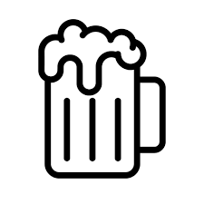

Illegaard
Illegaard on üks Tartu vanimatest baaridest. Sõbralik teenindus, maitsvad pubi-toidud ja hea seltskond, head õlled, huvitavad shotid ja kokteilid. Olenemata sellest, kas huvi on keelt pisut märjaks ajada, loova inimese kombel õlle kõrvale läpakaga tööd teha või ekraanilt jalkaülekandeid vaadata, Illegaard pakub võimalusi selleks kõigeks.